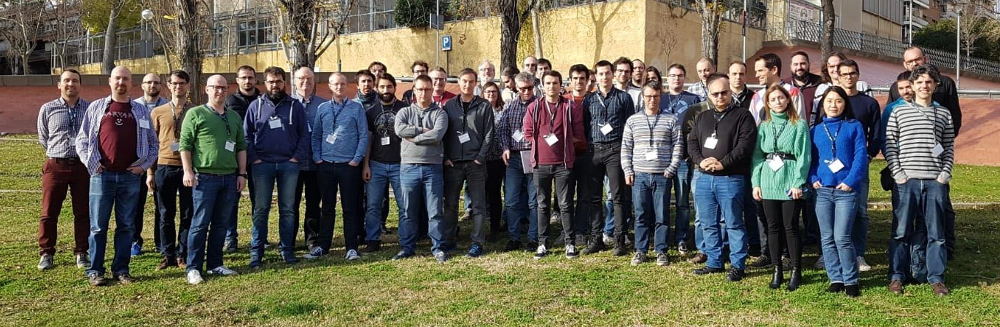

8th EasyBuild User Meeting
24-26 April 2023 @ London, UK
 (group picture from 5th EasyBuild User Meeting in Barcelona - Jan'20)
Practical info - Registration - Organisation - Program - Contact
EasyBuild is a software build and installation framework that allows you to manage (scientific) software on High Performance Computing (HPC) systems in an efficient way.
The EasyBuild User Meeting is an open and highly interactive event that provides a great opportunity to meet fellow EasyBuild enthusiasts, discuss related topics, and learn about new aspects of the tool.
It is intended for people that are already familiar with EasyBuild, ranging from occasional users to EasyBuild core developers, maintainers, and experts. Topics will be less introductory in nature than during other EasyBuild events that have been organized in the past.
The program includes presentations by both EasyBuild users and developers, as well as talks about open source projects relevant to the EasyBuild community.
Practical information
The 8th EasyBuild User Meeting will be held Mon-Wed 24-26 April 2023 in London (UK).
The venue is The Council Room at 170's Queens Gate (Imperial College London).
This is an open meeting, anybody interested is welcome to join.
Attendance is free of cost, but registration is required (see below).
Recommended hotels
The following hotels are recommended by Imperial College:- Park International Hotel(~10 min. walk to venue)
- Bailey'S Hotel London Kensington (~10 min. walk to venue)
- Queen’s Gate Hotel (1 min. walk to venue)
Zoom & YouTube
We intend to provide live streaming of all presentations that are part of the EUM'23 agenda, via Zoom and the EasyBuild YouTube channel.
Remote attendees will be able to join Zoom sessions for interactive discussions with the speakers.
Note that only registered attendees will have access to the Zoom sessions!
We also intend to record all sessions, and will make the recordings available shortly after the live presentations, via the EasyBuild YouTube channel.
Q&A via #eum channel in EasyBuild Slack
Remote attendees will be ale to submit questions via the #eum channel in the EasyBuild Slack. Comments in YouTube will be disabled for the live streaming events.
If you are not logged in to the EasyBuild Slack yet, you can request an invitation to join via https://easybuild.io/join-slack.
Registration
If you plan to attend one or more presentations, you must register. Seats are limited.
Although attendance is free and open to anyone, having a good view on how well the different sessions will be attended is important for us to be well prepared.
To register your attendance, please visit:
https://event.ugent.be/registration/eum23
Updates and practical information will be sent via email to anyone who registered.
Registration will be open until Sunday 2 April 2023.
Organisation
- Jörg Saßmannshausen (Imperial College London, UK)
- Simon Branford (University of Birmingham, UK)
- Jasper Grimm (University of York, UK)
- Adam Huffman (Big Data Institute, Oxford, UK)
- Kenneth Hoste (HPC-UGent, Belgium)
Program
The 8th EasyBuild User Meeting consists of 3 days of presentations and hands-on sessions.
Please note that all times are in British Summer Time (BST, equivalent to UTC+1)!
We intentionally left ample time in between talks to allow for Q&A, interactive discussions, switching between speakers and breaks.
Overview
(subject to change!)
- Mon 24 April 2023
- [Mon 10:00-12:00 BST - on-site] Welcome (informal)
- (lunch break)
- [Mon 13:00-14:00 BST - on-site] Keynote talk Emerging Technologies and Silicon for HPC: Not all Cores are Equal Ian Cutress (@TechTechPotato - More Than Moore)
- [Mon 14:00-15:00 BST - on-site] EasyBuild State of the Union Kenneth Hoste (HPC-UGent)
- (coffee break)
- [Mon 15:30-16:00 BST - remote] HPC.social (Alan Sill, TTU)
- [Mon 16:00-16:30 BST - remote] (talk TBC, more info later)
- [Mon 16:30-17:30 BST - on-site] EasyBuild 5.0 roadmap (speaker TBD)
- [Mon 18:30 BST] (group dinner)
- Tue 25 April 2023
- [Tue 09:00-10:00 BST - on-site] Welcome (informal)
- [Tue 10:00-10:45 BST - on-site] Site presentation: Digital Research Alliance of Canada - Lessons learned, new developments Bart Oldeman (McGill University, Digital Research Alliance of Canada, Calcul Québec)
- [Tue 10:45-11:30 BST - on-site] EESSI: status update Caspar van Leeuwen (SURF)
- [Tue 11:30-12:00 BST - remote] AOMP: OpenMP Target Offloading for AMD GPUs Jan-Patrick Lehr (AMD)
- (lunch break)
- [Tue 13:00-13:30 BST - on-site] Reap the benefits of heterogeneous computing with SYCL Chris Edsall (University of Cambridge)
- [Tue 13:30-14:00 BST - on-site] BEAR Portal Apps: Open OnDemand interactive applications at University of Birmingham James Carpenter (University of Birmingham)
- [Tue 14:00-14:30 BST - on-site] Don't Panic! Mostly Harmless Docs on Creating Easyconfigs Denis Krišťák and Filip Kružík (INUITS)
- [Tue 14:30-15:00 BST - remote] Spack update Todd Gamblin (Lawrence Livermore National Laboratory)
- (coffee break)
- [Tue 15:30-16:15 BST - on-site] EasyBuild on LUMI one year later: Successes and frustrations Kurt Lust (University of Antwerp, LUMI User Support Team)
- [Tue 16:15-17:30 BST - on-site] Best Practices for EasyBuild contributors (speaker TBD)
- [Tue 18:30 BST] (group dinner)
- Wed 26 April 2023
- [Wed 09:00-10:00 BST - on-site] Welcome (informal)
- [Wed 10:00-11:00 BST - on-site] Keynote talk (keynote talk TBC - more info later)
- [Wed 11:00-11:30 BST - on-site] EasyBuild @ Fred Hutch + Extending R and Python with easy_update + Using containers for building software John Dey (Fred Hutch Cancer Center)
- [Wed 11:30-12:00 BST - on-site] User experience with EasyBuild deploying Health-GPS Microsimulation to Imperial HPC Israel Vieira (Imperial College London)
- (lunch break)
- [Wed 13:00-14:00 BST - on-site] So you want to implement a bug fix or feature in EasyBuild framework... (speaker TBD)
- [Wed 14:00-15:00 BST - on-site] Open (guided) discussion on EasyBuild/EESSI
- [Wed 15:00 BST - on-site] (social event)
[Mon 24 Jan 2023 - 10:00-12:00 BST - on-site]
Welcome to the 8th EasyBuild User Meeting (EUM'23)
Informal welcome session, coffee/tea/cookies will be available.
[Mon 24 April 2023 - 13:00-14:00 BST - on-site]
Keynote: Emerging Technologies and Silicon for HPC: Not all Cores are Equal
by Ian Cutress (@TechTechPotato - More Than Moore)
The HPC community is very well versed in CPU technology, or what happens when you connect a lot of GPUs in world class supercomputers. What if I told you there is another way? In this presentation we're going to cover a new breed of hardware that both fights traditional HPC but also looks to help accelerate it, mostly from the world of machine learning. Not only are the big players getting involved, but dozens of smaller startups are taping out hardware designed to accelerate anything from matrix-multiplications to standard stencil compute. There's also the realm of Quantum and Analog/Optical compute to discuss, and whether reduced precision is a practical way to approach HPC.
[Mon 24 April 2023 - 14:00-15:00 BST - on-site]
EasyBuild State of the Union
by Kenneth Hoste (HPC-UGent, Belgium)
Let's look back at what was changed in EasyBuild in the last year, how we are doing right now, what we are currently working on, which challenges are ahead, and the enhancements and changes in EasyBuild we envision for the future.
In addition, the highlights of the last EasyBuild User Survey will be covered in this talk.
[Mon 24 April 2023 - 15:30-16:00 BST - remote]
HPC.social
by Alan Sill (Texas Tech University, US)
(more info soon)
[Mon 24 April 2023 - 16:30-17:30 BST - on-site]
EasyBuild 5.0 roadmap
(speaker TBD)
(more info soon)
[Tue 25 April 2023 - 10:00-10:45 BST - on-site]
Site presentation: Digital Research Alliance of Canada - Lessons learned, new developments
Bart Oldeman (McGill University, Digital Research Alliance of Canada, Calcul Québec)
(more info soon)
[Tue 25 April 2023 - 10:45-11:30 BST - on-site]
EESSI: status update
Caspar van Leeuwen (SURF)
(more info soon)
[Tue 25 April 2023 - 11:30-12:00 BST - remote]
AOMP: OpenMP Target Offloading for AMD GPUs
by Jan-Patrick Lehr (AMD)
(more info soon)
[Tue 25 April 2023 - 13:00-13:30 BST - on-site]
Reap the benefits of heterogeneous computing with SYCL
by Chris Edsall (University of Cambridge)
(more info soon)
[Tue 25 April 2023 - 13:30-14:00 BST - on-site]
BEAR Portal Apps: Open OnDemand interactive applications at University of Birmingham
by James Carpenter (University of Birmingham)
An overview of how we provide Open OnDemand interactive apps, backed by our BlueBEAR HPC compute and using Apptainer containers alongside our EasyBuild software stack.
[Tue 25 April 2023 - 14:00-14:30 BST - on-site]
Don't Panic! Mostly Harmless Docs on Creating Easyconfigs
Denis Krišťák and Filip Kružík (INUITS)
This talk is about the latest and upcoming additions to the EasyBuild project by a consultancy company Inuits. More specifically, about new software installations and - most importantly - documenting the process of creating new EasyConfigs. The documentation will cover best practices for tackling new software installations along with common pitfalls and hardships developers encounter. This contribution aims to help make the EasyBuild project more accessible and user-friendly for everyone by enabling them to add software support promptly.
[Tue 25 April 2023 - 14:30-15:00 BST - remote]
Spack update
Todd Gamblin (Lawrence Livermore National Laboratory)
(more info soon)
[Tue 25 April 2023 - 15:30-16:15 BST - on-site]
EasyBuild on LUMI one year later: Successes and frustrations
Kurt Lust (University of Antwerp, LUMI User Support Team)
LUMI is one of the EuroHPC JU pre-exascale systems. The supercomputer is hosted by a consortium of eleven European countries, led by Finland, and is in CSC's data centre in Kajaani, Finland. LUMI is an HPE-Cray EX system fully based on AMD processor technology. Most of the compute power comes from 2,560 compute nodes with four AMD MI250X GPUs, but the cluster also contains over 1,500 regular compute nodes, and partition for data-analysis and visualization. Storage consists of 5 Lustre file systems (one flash-based and four with conventional hard disks) and an object storage system. Much of the system is now in regular operation, though some services still must be developed. A small extension of the system is coming up this spring.
During the EasyBuild 2022 User Meeting we discussed how we integrated EasyBuild with the HPE-Cray Programming Environment used on the system and developed an EasyBuild configuration that enables users to easily build their own software installation on top of what is already installed centrally. Our first experiences with this system are positive. It has enabled us to easily deliver specific configurations to users or test new packages. The transition to installing GPU software was also fairly smooth. And we've also built up a simple but efficient documentation system for our software catalogue.
After developing and using EasyBuild for nearly two years on LUMI, we have run into some annoyances and features that we are missing or that are underdeveloped for the usage scenario that we have on LUMI. As it is probably not too late yet for a discussion about features for EasyBuild 5, we will also spend some time during the presentation highlighting those.
[Tue 25 April 2023 - 14:30-15:00 BST - remote]
Best Practices for EasyBuild contributors
(speaker TBD)
(more info soon)
[Wed 26 April 2023 - 11:00-11:30 BST - on-site]
EasyBuild @ Fred Hutch + Extending R and Python with easy_update + Using containers for building software
by John Dey (Fred Hutch Cancer Center)
Easyconfig files at Fred Hutch (https://github.com/FredHutch/easybuild-life-sciences).
easy_update (https://github.com/fizwit/easy_update) has been enhanced to follow complex dependencies of bundles. The size of R continues to creep in size. Many of the additional module requests could be minimized if sites extended the base easyconfig. Does every site need libraries for Marine Science?
EBcb (https://github.com/FredHutch/EBcb): EasyBuild container build - A docker container for building software with EasyBuild, a clean room for building easyconfigs.
[Wed 26 April 2023 - 11:30-12:00 BST - on-site]
User experience with EasyBuild deploying Health-GPS Microsimulation to Imperial HPC (Israel Vieira)
by Israel Vieira (Imperial College London)
This talk presents a first-time user experience with EasyBuild deploying the Health-GPS software to the Imperial College HPC system. Health-GPS is an open source, cross-platform microsimulation tool written in modern C++ using a toolchain that includes package manager for external dependencies. The software was initially deployed manually to the HPC, the transition to EasyBuild deployment has been a great success and streamlined the software development! However, the process required a steep learning curve and determination from the user, support from the HPC team, collaboration with EasyBuild users, and like our personal lives, is still under construction.
[Wed 26 April 2023 - 13:00-14:00 BST - on-site]
So you want to implement a bug fix or feature in EasyBuild framework...
(speaker TBD)
(more info soon)
[Wed 26 April 2023 - 14:00-15:00 BST - on-site]
Open (guided) discussion on EasyBuild/EESSI
(more info soon)
Contact
In case of questions, please contact eum@lists.ugent.be.